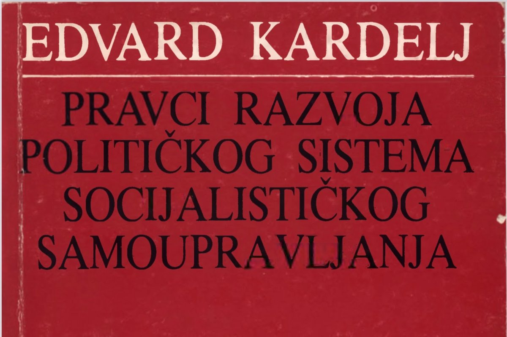

|
[14] Sreću čoveku ne može doneti ni država, ni sistem, ni politička stranka. Sreću čovek može sebi stvoriti samo on sam. Ali ne on sam kao jedinka, nego samo u ravnopravnim odnosima sa drugim ljudima. U tim odnosima on treba samoupravno i slobodno da ovladava svojim pojedinačnim i opštim društvenim odnosima, ali — u odgovarajućim demokratskim organizacionim oblicima — i državom, sistemom i političkom strankom kao instrumentima njegovog sopstvenog samoupravljanja. Avangardne snage socijalizma i socijalističko društvo, prema tome, mogu imati samo jedan cilj, a to je da, prema mogućnostima datog istorijskog trenutka, stvaraju uslove u kojima će čovek biti što slobodniji u takvom ličnom izražavanju i stvaranju da može na osnovi društvene svojine na sredstvima za proizvodnju — slobodno raditi i stvarati za svoju sreću. To je samoupravljanje.
[16–17] Takav sistem samoupravnih demokratskih odnosa je nastao i postepeno se razvijao od prvih odbora nove vlasti koji su stvarani još od samog početka narodnooslobodilačkog ustanka i socijalističke revolucije u toku drugog svetskog rata. Ta revolucija je bila duboko narodna i demokratska, a to znači izvanredno masovna. Usred Hitlerovog „Rajha“ nastajala je oslobođena teritorija, koja je ponekad zahvatala tri petine teritorije Jugoslavije. Na toj teritoriji — uz to višenacionalnoj — bilo je fizički nemoguće uspostavljati neku centralizovanu vlast. Nju su spontano i na osnovu akcije narodnooslobodilačkog pokreta uspostavljale i održavale narodne mase, upravo u nekim početnim oblicima empirističke samoupravne demokratije.
[22] U jugoslovenskom socijalističkom društvu su Ustavom, Zakonom o udruženom radu i nizom drugih sistemskih zakona uspostavljene neposredne ekonomske veze radnika u udruženom radu sa njihovim podruštvljenim minulim radom, jer upravo karakter tih odnosa daje realnu sadržinu jednom socijalističkom društvu. Pod pojmom minuli rad u ovde pomenutom smislu podrazumevam onaj deo vrednosti stvorene radnikovim radom koji ne ulazi u njegov lični dohodak, nego se podruštvljuje i kao takav služi bilo za akumulaciju, odnosno kao društveni kapital, bilo za zajedničku ili opštu društvenu potrošnju raznih vrsta.
U stvari, u karakteru tih odnosa između radnika i minulog rada najjasnije i najdoslednije se izražava klasni karakter određenih društvenih odnosa.
[24] Stoga naš sistem i predviđa da se svi vidovi dohotka u proizvodnji i reprodukciji stiču samo u ruke radnika osnovne organizacije udruženog rada i da niko drugi osim radnika te osnovne organizacije udruženog rada ne može bez njihove saglasnosti da raspolaže dohotkom.
[24] Na taj način je radnicima i radnim ljudima uopšte, načelno, obezbeđeno — mada u praksi nije uvek tako — neposredno upravljanje ne samo njihovim tekućim radom, nego i njihovim podruštvljenim minulim radom, to jest sredstvima društvene reprodukcije, a samim tim i sredstvima za proširivanje i unapređivanje materijalne baze njihovog rada, odnosno — kako skraćeno nazivam ta sredstva — društvenim kapitalom u osnovnim organizacijama udruženog rada.
[25] To je oblik definitivnog spajanja funkcija upravljanja i raspolaganja radom i društvenim kapitalom u rukama radnih ljudi, što je u početnim fazama razvoja socijalizma najradikalniji oblik prevazilaženja privatno-sopstveničkog ili birokratsko-monopolističkog prisvajanja radnikovog viška rada, a time i ostataka kapitalizma u svim njegovim oblicima.
[25] Napominjem pri tome da pod pojmom radnik u napred pomenutom smislu podrazumevam sve ljude — bilo na fizičkom ili na umnom radu, bilo u materijalnoj proizvodnji ili u drugim društvenim delatnostima, bilo na najnekvalifikovanijem ili na najodgovornijem mestu — koji rade sredstvima za proizvodnju u društvenoj svojini.
[26] I konačno, na taj način i samo privredno planiranje prestaje da bude instrument centralističkog monopola države, a postaje pre svega stvar slobodnog i dobrovoljnog samoupravnog sporazumevanja i društvenog dogovaranja između organizacija udruženog rada, u skladu sa njihovim konkretnim interesima. Time ni upravljanje tekućim radom, ni sticanje dohotka, ni njegovo raspoređivanje niti njegovo angažovanje u procesu proširene reprodukcije nisu više stvar ni države, odnosno njenog aparata, niti samovoljno nametnutog tehnokratskog monopola, nego stvar odnosa među samim radnicima, koje oni — u skladu sa svojim interesima — ostvaruju na tržištu, u slobodnoj razmeni rada putem društvenog dogovaranja i samoupravnog sporazumevanja, u udruživanju rada i sredstava, u sticanju i raspoređivanju zajednički ostvarenog dohotka itd. Međutim, iako je reč o sistemu demokratskog samoupravljanja, ti interesi se, ipak, ne mogu niti da ispoljavaju niti da ostvaruju nekim automatizmom, nekom apsolutnom slobodom, nekom stihijskom konkurencijom na tržištu ili u međusobnim odnosima, ili u sličnim oblicima klasičnog ekonomskog liberalizma.
↑ Top